EmpezarGet started
Tramtai pone tus agentes de IA detrás de una API en tu equipo: instálalo, conecta un agente y prueba.Tramtai puts your AI agents behind an API on your computer: install it, connect an agent and try it.
Cómo funcionaHow it works
- 1. Tu appYour appEnvía la petición a una URL de Mis APIs, o la escribes en Probar.Sends the request to a URL from My APIs, or you type it in Try.
- 2. La APIThe APIComprueba la clave y el presupuesto y aplica la receta.Checks the key and the budget and applies the recipe.
- 3. La colaThe queueConvierte los archivos, mide si caben en el modelo y espera su turno.Converts the files, checks that they fit the model and waits its turn.
- 4. El agenteThe agentResponde Claude Code, Codex, GitHub Copilot, Gemini o Antigravity. Si falla, sigue el respaldo.Claude Code, Codex, GitHub Copilot, Gemini or Antigravity answers. If it fails, the fallback takes over.
- 5. La respuestaThe answerLlega en vivo, se valida si hay esquema y queda en el Historial.Arrives live, is validated if there is a schema and stays in History.
Descargar TramtaiDownload Tramtai
Antes necesitas el CLI de al menos un agente (Claude Code, Codex o GitHub Copilot CLI) o una clave de la Gemini API. En Windows puede salir «Windows protegió su PC», porque el instalador aún no está firmado.You first need the CLI of at least one agent (Claude Code, Codex or GitHub Copilot CLI) or a Gemini API key. On Windows you may see “Windows protected your PC”, because the installer is not signed yet. Qué hacer con el aviso de WindowsWhat to do about the Windows warning
Paso a pasoStep by step
- Instala Tramtai: instalador o portable en Windows, Homebrew o .dmg en macOS, .deb o .rpm en Linux.Install Tramtai: installer or portable on Windows, Homebrew or .dmg on macOS, .deb or .rpm on Linux.
- En Agentes, conecta un agente con tu suscripción (uso personal) o con una clave de API.In Agents, connect an agent with your subscription (personal use) or with an API key.
- En Probar, escribe un mensaje, elige agente y modelo y mira la respuesta en vivo.In Try, type a message, pick agent and model and watch the answer live.
- En Mis APIs copia la URL y la clave y ponlas en tu app (tema «Conectar mi app»).In My APIs copy the URL and the key and put them in your app (topic "Connect my app").
Qué verás en pantallaWhat you will see on screen
- El mapa en vivoThe live map Aquí ves el mapa en vivo: tus apps, Tramtai y los agentes. Cada petición cruza el mapa como un tranvía y puedes pulsarlo para seguirla.Here is the live map: your apps, Tramtai and the agents. Each request crosses it as a tram, and you can click it to follow it.
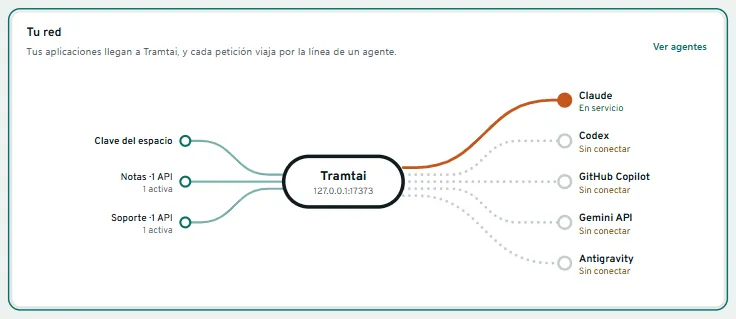
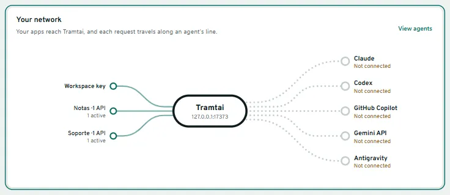
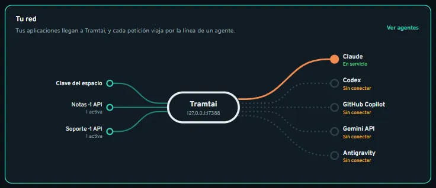
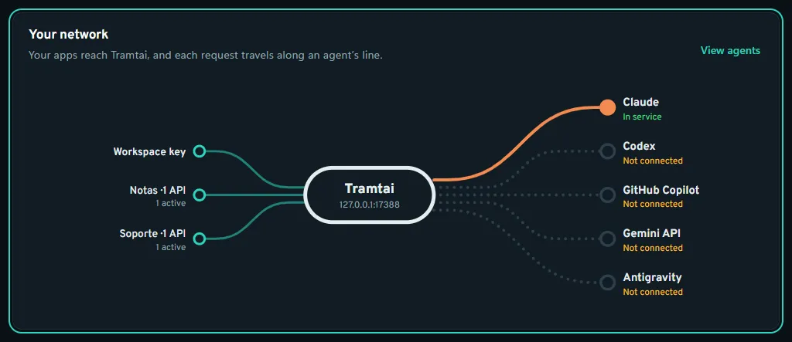
- Tus primeros pasosYour first steps La guía que te lleva de conectar un agente a probarlo y a conectar tu app. Aunque la ocultes o la termines, aquí sigue la línea para repetir este recorrido.The guide that takes you from connecting an agent to trying it and connecting your app. Even if you hide or finish it, the line to replay this tour stays here.
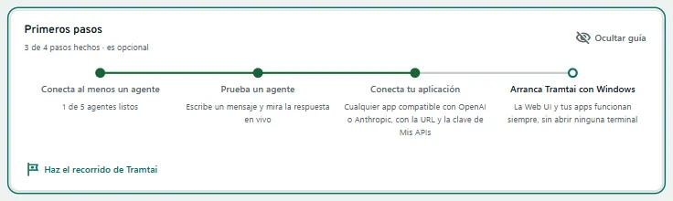
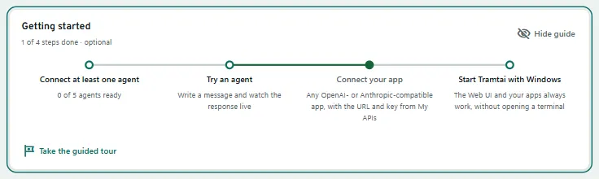
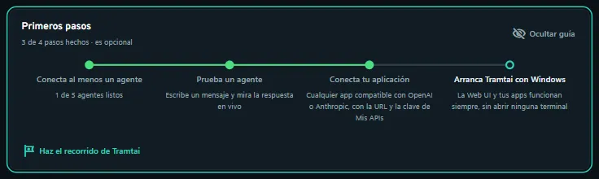
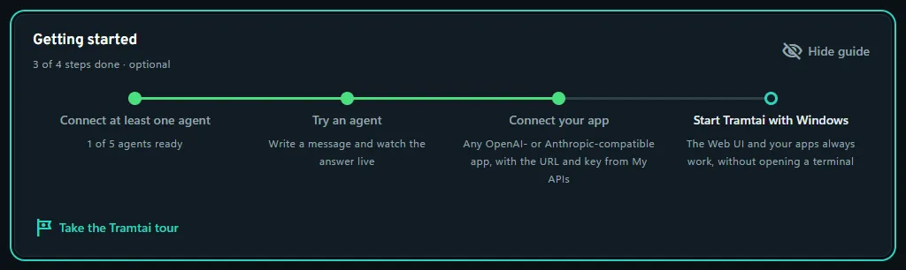
- El espacio de trabajoThe workspace Aquí ves en qué espacio estás. Cada espacio guarda sus propias peticiones y APIs; desde este selector pasas de uno a otro o abres un proyecto.Here you see which workspace you are in. Each one keeps its own requests and APIs; use this selector to switch or to open a project.
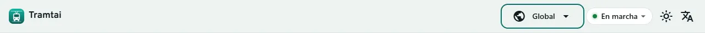
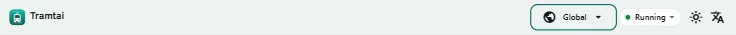
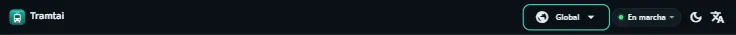
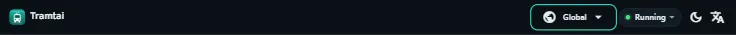
- La ayuda, a manoHelp at hand Junto al título de cada página hay un botón ? que abre su ayuda en un panel, sin que salgas de donde estás.Next to every page title there is a ? button that opens its help in a panel, without leaving where you are.
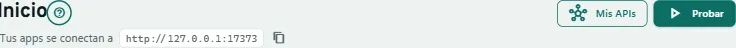
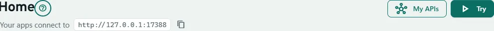
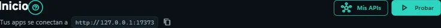
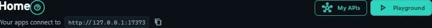
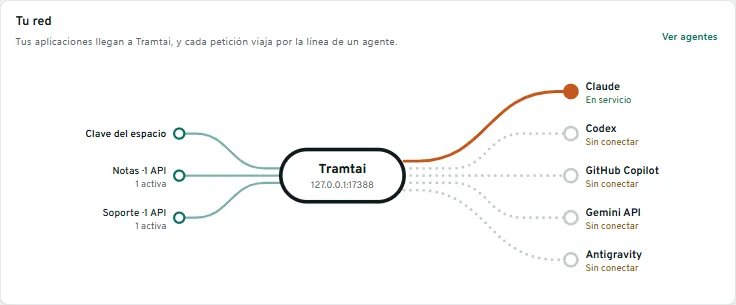
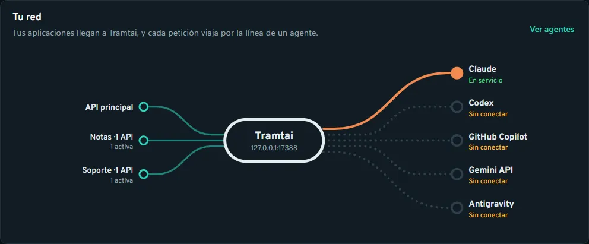
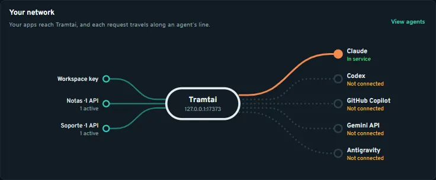
Tramtai no tiene servidor propio: tus mensajes van al proveedor del agente. Por defecto, los agentes de tus apps trabajan en una carpeta temporal vacía, sin terminal ni web; Codex, en solo lectura.Tramtai has no server of its own: your messages go to the agent’s provider. By default, your apps’ agents work in an empty temporary folder, with no terminal or web; Codex runs read-only.
PreguntasQuestions
¿Cómo repito el recorrido de bienvenida?How do I repeat the welcome tour?
En Inicio, pulsa «Haz el recorrido de Tramtai» en Primeros pasos. Esc lo cierra y las flechas pasan de paso. Solo enseña: no pulsa nada ni cambia tus datos.On Home, click "Take the Tramtai tour" in Getting started. Esc closes it and the arrow keys move between steps. It only shows: it clicks nothing and changes no data.
¿Qué son los tranvías del mapa de Inicio?What are the trams on the Home map?
Cada petición en curso: sale de su API, pasa por Tramtai y recorre la línea de su agente. Se pone roja si falla y cambia de línea si salta al respaldo.Each request in progress: it leaves its API, goes through Tramtai and runs along its agent’s line. It turns red if it fails and changes line if it falls back.
¿Necesito una clave para entrar?Do I need a key to get in?
No. La app entra sola, y el navegador también si es de tu usuario; si no, «tramtai abrir» la abre ya dentro. Las claves de Mis APIs son solo para tus apps.No. The app signs in by itself, and so does the browser if it belongs to your user; if not, "tramtai abrir" opens it already signed in. My APIs keys are only for your apps.
¿Cómo sé si sigue en marcha y cómo lo detengo?How do I know it is running, and how do I stop it?
Arriba a la derecha dice «En marcha» o «Sin conexión». Sigue en segundo plano aunque cierres la ventana; «tramtai servicio detener» lo detiene.The top right says "Running" or "Offline". It keeps running in the background even if you close the window; "tramtai servicio detener" stops it.
Windows dice «Windows protegió su PC»Windows says "Windows protected your PC"
Pulsa Más información → Ejecutar de todas formas. Aparece porque el instalador todavía no está firmado con un certificado de pago.Click More info → Run anyway. It appears because the installer is not signed with a paid certificate yet.
macOS no deja abrir la appmacOS won’t open the app
Con Homebrew no pasa. Con el .dmg: Ajustes del Sistema → Privacidad y seguridad → Abrir igualmente, o «xattr -dr com.apple.quarantine /Applications/Tramtai.app».Not with Homebrew. With the .dmg: System Settings → Privacy & Security → Open Anyway, or "xattr -dr com.apple.quarantine /Applications/Tramtai.app".
¿Qué necesito en Linux?What do I need on Linux?
El .deb o el .rpm (x64 y ARM) instalan solos GTK 4 y WebKitGTK 6.0. En GNOME, el icono de la bandeja necesita la extensión AppIndicator.The .deb or .rpm (x64 and ARM) install GTK 4 and WebKitGTK 6.0 on their own. On GNOME, the tray icon needs the AppIndicator extension.
¿Cómo funciona la copia portable?How does the portable copy work?
El .zip de Windows guarda todo en «datos-tramtai», a su lado, sin tocar la instalación. Para actualizarla, descomprime la nueva encima.The Windows .zip keeps everything in "datos-tramtai", next to it, without touching the installed copy. To update it, unzip the new one on top.
¿Cómo paso mis datos a la portable?How do I move my data to the portable copy?
Con las dos cerradas, copia el contenido de %APPDATA%\tramtai en «datos-tramtai». Las claves de los proveedores siguen en el almacén del sistema: en otro equipo, guárdalas de nuevo.With both closed, copy the contents of %APPDATA%\tramtai into "datos-tramtai". Provider keys stay in the system store: on another computer, save them again.
¿Puedo llevar la portable en un pendrive?Can I carry the portable copy on a USB stick?
Sí, pero en un pendrive con FAT o exFAT la carpeta no se puede proteger: quien tenga el pendrive puede leer las claves de tus APIs.Yes, but on a FAT or exFAT stick the folder cannot be protected: whoever has the stick can read your APIs’ keys.
¿Puedo usar solo la terminal?Can I use only the terminal?
Sí: «brew install mscottb/tramtai/tramtai» o el script instalar.sh dejan la CLI y el servicio; «tramtai abrir» lo inicia y abre la Web UI.Yes: "brew install mscottb/tramtai/tramtai" or the instalar.sh script install the CLI and the service; "tramtai abrir" starts it and opens the Web UI.